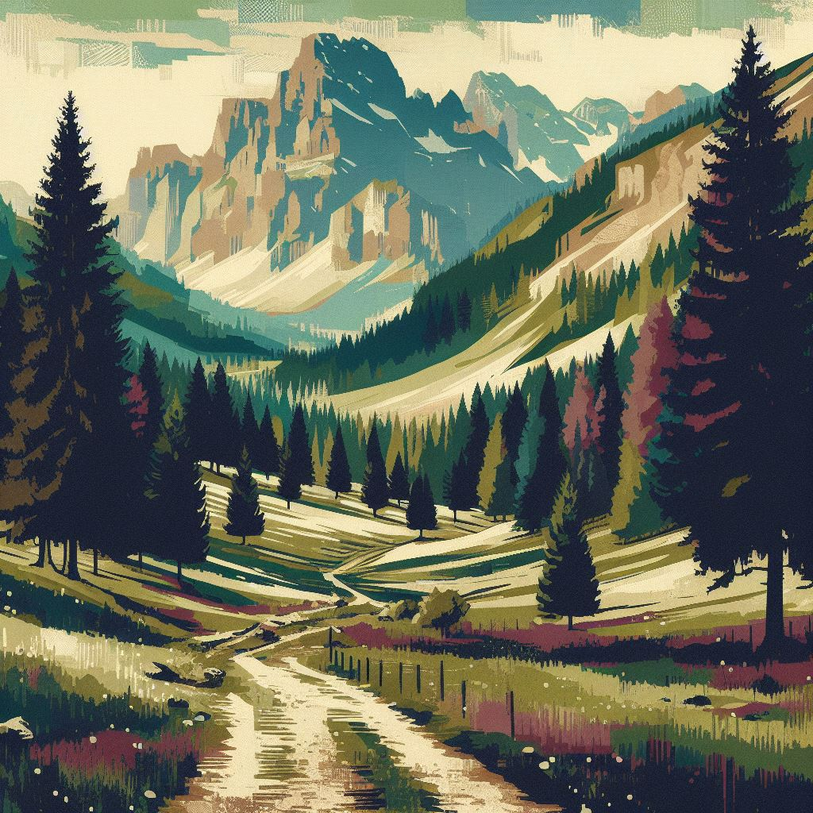

Tereza Vrbová
"All We Have To Decide Is What To Do With The Time That Is Given To Us."
Welcome
My name is Tereza Vrbová and it is my pleasure to welcome you on my personal web.
Are you interested in IT? Great, that is something that we have in common. I'm an Information Technology student at Technical University of Liberec (in Czechia) and my specialization is Intelligent Systems.
I love to code and learn.
Would you like to know more about me?
Feel free to explore my web. You can read about my life journey - my education, certificates, work experience and much more here.
During my way I learned to use quite a few languages and tools and gained some interesting skills, you can find them here.
You can also read about my hobbies here or find some of my projects here.
If you are interested in talking to me about my IT skills or anything else, feel free to contact me, I provide you an option to do it here.
Or just keep scrolling!
About me... from my heart
I am fascinated by the world and the universe around us. I never stop wondering, rejoicing, thinking and questioning. I already know something about the world, but there's a lot I don't know. I make mistakes, stumble and get lost, but I always get up and keep trying. I try my best. I learn a lot of new things every day. I'm going forward, I don't know where, but as long as I'm learning and laughing, as long as it helps at least someone, as long as I can see the meaning, I'll go there with joy.
My journey
“I will go anywhere, provided it be forward.”
Education
Technical University of Liberec
Field of study: Information Technology
Specialization: Intelligent Systems
Time: 2022-now
Exploring interesting world of IT and enjoying learning.
Gymnazium Dr. Josefa Pekaře, MB
Time: 2014-2022
Gaining general knowledge about the world.
Work experience
Czechitas
Role: Lecturer, coach and workshopist
Time: 2021-now
Organizing and teaching IT courses for women and kids. Especially
Python, HTML and Scratch.
Courses and Certificates
International Summer School on AI
"From Deep Learning to Data Analytics"
Organization: University of Udine, Italy
Time: July 2023
Gaining experience and broadening my horizons about Artificial
Intelligence.
100 Days of Code
The Complete Python Pro Bootcamp
Organization: Udemy.com
Time: January 2022
Gaining broad knowledge and practical skills in Python (including web
development, data analytics, testing, etc.)
First Certificate in English
Level C1 (pass at Grade A)
Organization: Cambridge Assessment English
Time: December 2021
My Skills
“As many languages you know, as many times you are a human being.”
Languages (IT)
Python
Advanced knowledge. Including data analytics, web development,
testing, etc.
Django, Flask, Pandas, Numpy, Scikit-learn, Selenium, Beautiful Soup,
...
Java
Basic knowledge including main concepts.
Matlab
Experienced with signal processing, analyses, ...
HTML, CSS
Websites... Possible to combine with JS, Python,...
JavaScript
Simple web apps, interactive web designs,...
C, C++
Basic knowledge of concepts.
SQL
From simple queries to more sophisticated ones.
Dart
Simple mobile applications creating.
VHDL
Programming FPGA (Field Programmable Gate Array).
Skills
Languages (human)
English - Advanced knowledge (C1)
Czech - Native speaker
French - Advanced Begginer (A2/B1)
Soft Skills
I'm hardworking, reliable and patient. I have also caring and
understanding personality.
I love to learn and explore the world. My goal is to
always go forward.
Skills
Advanced computer skills. From basic tools (Microsoft Office) to
programming.
Able to learn new concepts - experienced documentation reader.
Logical thinking and math talent.
My Hobbies
“Be yourself; everyone else is already taken.”
Sports
I enjoy hiking, running, cycling, cross-country and down-hill skiing and plenty other sports. I love to spend time in nature and do something good for my health.
Puzzles
I like to train my mind and use logical thinking. So I'm always up for sudoku, crosswords or puzzles.
Reading
Books give me great self-growth ideas or just stories of fantastic worlds.
Creative activities
You can find me crocheting, painting, cooking or just creating something for fun.
Contact me
“The highest forms of understanding we can achieve are laughter and human compassion.”
Let's talk!
Are you interested in some of my skills and would you like to talk to
me on work or academical level? Or just chat?
Feel free to contact me.
You can write me on my LinkedIn here or on my email: tereza.vrbova1@tul.cz
Have a great day!
Website was created by Tereza Vrbová, images were generated by Image Creator from Microsoft Designer.